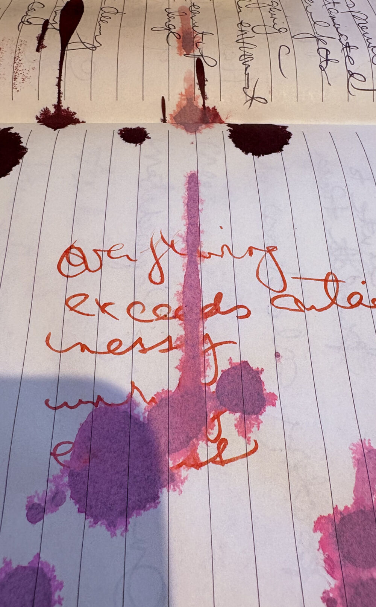
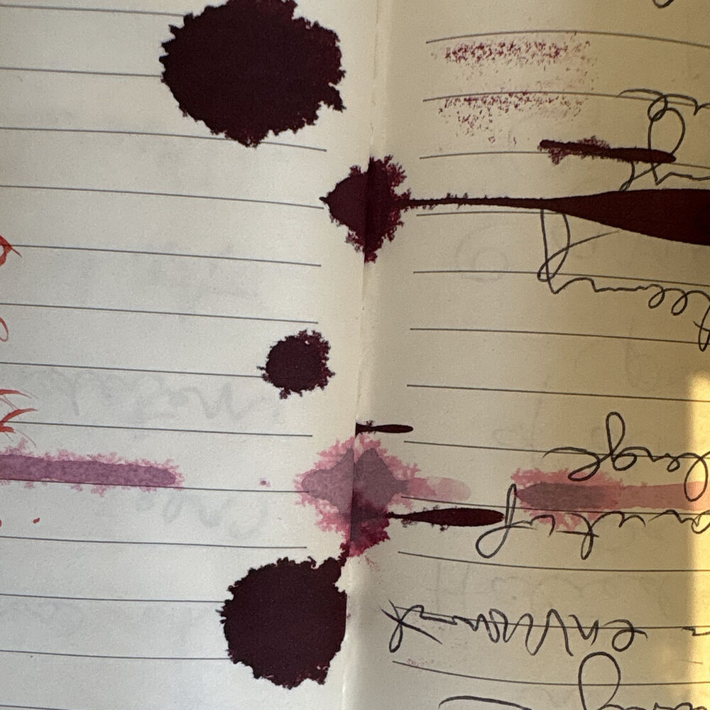

The language arts as a medium for weaving the social fabric of our world.
We honour the messy, unfinished, and flawed ongoingness of art. Against the perfection of the finely wrought, we value work that holds a place to enter — that the gap invites.

Loose Threads Press is a feminist literary small press in Kitchener-Waterloo, publishing limited-run editions of experimental poetry, fiction, and creative nonfiction. Co-founded by three local artist-scholars — Shana MacDonald, Kiera Obbard, and Adra Raine — we are housed in the Interdisciplinary Feminist Research Lab at the University of Waterloo, and we offer public workshops on writing, editing, and publishing alongside community space for artmaking and exchange.
The three of us crossed paths as feminist scholars and artists pushing against the boundaries of form and conventions of literary value. We found a common desire to see work published that speaks to the moment, that centres voices left out of mainstream publishing, and that creates a culture of collaborative inquiry. We looked at each other and realized we could do this ourselves. We buzzed with the realization that we can make the world we want.
Our press is a home to literary forms that are uneven, incohesive, strange, menopausal, queer, uncontained. A fountain pen exploded on the page as we took notes; our writing is always interrupted — by children we love, by domestic labour, unwaged, by waged labour, unloved, by news feeds, by anxiety, by illness, by crises personal and global — our messy lives smear across the pulped fibres upon which we document our story in jagged words and inky spills.
We believe writing is a trial, as in: to try things out, to let others respond, to learn the meaning through the practice of peers weighing in, talking it out. We approach publication as a way to experiment and receive feedback from an audience beyond one's immediate location — not to enter the annals of literary history. That is not the job of living peoples of the present. The job of living peoples of the present is to learn together through story, song, conversation, gossip, all of which contribute to the continuous shaping of language that shapes us. We connect writers to readers, and empower everyone to think of themselves as both.
In year one, we are prototyping the structure we believe will make the Press most dynamic: a repeating cycle that moves from workshop to publication to interactive book launch — and then back to workshop, and so on — with monthly reading club meetings centred on the texts we publish or are inspired by.
Workshops on zines, autoethnographic prose poetry, manifesto writing, editing for publication. Some at the Press at the Feminist Research Lab on the UW campus, some at pop-up sessions in your local cafe. Crafting supplies, a sewing machine, and knitting needles always on hand. Tired of words? Make a collage.
Experimental poetry, fiction, and creative nonfiction in beautifully made limited-run editions. Twenty percent of titles each year are by emerging writers. The single author is the starting point — the first runner in the relay; the manuscript is a baton passed to the next writer.
With each publication, we host a monthly reading club to cultivate engagement, inviting reader responses in the form of more writing. The reading club is not an audience for the author; it is the next set of writers learning their craft in public.

Principles for Surviving the Collapse of Capitalism is a collaboratively authored book that began as a reading group on Timothy Snyder's On Tyranny: Twenty Lessons for the Twentieth Century and grew, over a series of creative writing workshops, into a counter-set of lessons for our current moment — written from a feminist, queer, anti-racist, and disability justice point of view.
From the reading group came the workshops; from the workshops came further sessions on writing and revision; and from those sessions, this book. Collage and illustrations created by workshop participants accompany the text and are incorporated into the cover. The process of its making provided the prototype for the cycle the Press now seeks to establish: words made in company, passed between hands, finished in public.
We will launch the book in June 2026 with an interactive event that includes zine-making and manifesto writing. You are invited.
The small press landscape in Kitchener-Waterloo is thin to the point of absence.
National presses do vital work, but they cannot be everywhere, and they cannot be here in the way a press rooted in this place can be. Loose Threads Press is meeting a need named by writers, readers, and students across the region: a press that belongs to this community and answers to it.
We enter the small press tradition of reimagining what a small press can be. We put community and creativity at the centre of the operation. The workshop is not marketing for the book; the workshop is where the book begins. The reading club is not an audience for the author; it is the next set of writers learning their craft together. Our structure insists that making and gathering are inseparable — that writing and reading are as necessary to publication as inhaling and exhaling are to breath.
We are launching a feminist small press at a moment when the world is more openly misogynistic than it has been in a generation. We prioritize the voices that the algorithm erases and the voices the current moment tries to silence. We offer paper, ink, glue, and the hands of readers turning pages, as a counter-infrastructure to the engagement metric.
Twenty percent of Loose Threads publications each year are by emerging writers. Open calls for our edited anthologies invite work from writers who have never been published alongside writers who have been published widely.
Workshops, reading clubs, and book launches are free to attend, by design. Mentorship is intergenerational — for young people just finding their voices, and for those left behind by earlier literary gatekeeping. The door is held open.
Waterloo, Wilfrid Laurier, and Conestoga graduate hundreds of students each year who study writing, literature, and the book arts with limited opportunity to apprentice in a working small press. We offer that local site.
"Supporting small press is supporting literature on the cutting edge. Small press is the guardian of literary culture and free speech."
bpNichol
We're launching in summer 2026. Subscribe for workshop announcements, reading club invitations, calls for submissions, and news of forthcoming books. The first one is on its way.